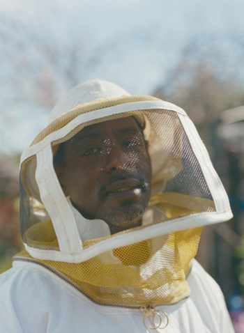
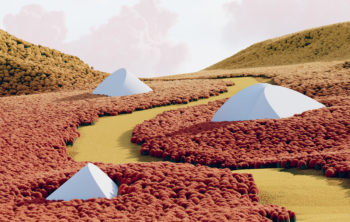

ROCK STEADY
A breath of fresh air amid the ancient Stone Forest of southwestern China.
Issue 37
The importance of nature for both our personal wellbeing and global prosperity has never been clearer. With a cautious return to the great outdoors now on our shared horizon, Kinfolk heeds the enticing call of the wild.
-
DESIGN,PARTNERSHIPS
Sea Change
In partnership with Fritz Hansen, Kinfolk absorbs the transformative power of the sea.
-
ARTS & CULTURE,ISSUE 37
Mona Chalabi
On sending spreadsheets viral.
-
 ARTS & CULTURE,ISSUE 37
Ron Finley
An exclusive excerpt from our forthcoming book, The Kinfolk Garden.
-

ARTS & CULTURE,ISSUE 37
Archive: Helen Frankenthaler
On the legacy of artist Helen Frankenthaler—a self-described “square” and the pioneer of the freewheeling, feeling-focused Color Field movement.
-
ARTS & CULTURE,FASHION,ISSUE 37
The Click Farm
Meet the influencers, and owners, fighting like cats and dogs for your likes.
-
ARTS & CULTURE,ISSUE 37
Haatepah Clearbear
First, Haatepah Clearbear learned about his past. Now the young model is using that knowledge to advocate for Native American futures—and the planet.
-
ARTS & CULTURE,ISSUE 37
Vizcaya Gardens
A garden once dismissed as a stylistic mishmash now conjures nostalgia for an impossible place.
-

FASHION,ISSUE 37
Material Girl
The most interesting people, stories and haircuts all have layers. This fall, so does your wardrobe.
-
 ARTS & CULTURE,ISSUE 37
Rendered Impossible
Those who can only dream of the great outdoors may as well have some fun while doing it.
Flower Arranging:
Miyoko Yasumoto
In her Parisian atelier, Miyoko Yasumoto makes an unfrivolous case for
floristry. Words by Annick Weber. Photography by Luc Braquet.

Current Issue
From wilderness to windowsill: Plant roots in the world around you.
Buy Now